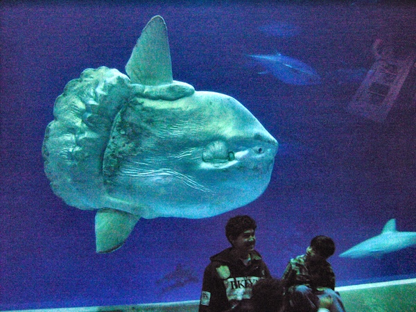
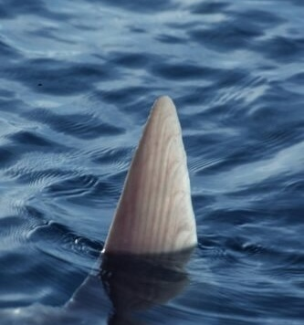
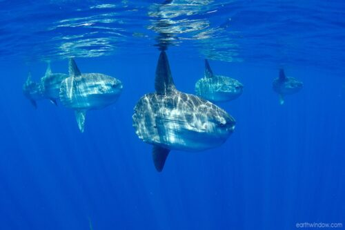

Ocean Sunfish

Mola Mola
Size: About 6 feet (long and tall!)
Habitat: temperate and tropical waters of each ocean.
Discovery Date: As early as 1758
“Basking” behavior, though they spend much of their life hunting in the depths! Sometimes mistaken for great whites due to their fins.
Libero dolor molestiae facilis esse reprehenderit deserunt numquam, iusto a laudantium odit exercitationem suscipit tempore error, distinctio, molestias doloribus adipisci! Beatae minus ea corporis eligendi voluptatem. Repudiandae eos quis eligendi distinctio sunt vero ad, ex neque possimus deserunt amet repellat sit? Adipisci nisi, sapiente iusto doloribus laboriosam pariatur quasi minima.

Soluta sunt dolore adipisci omnis libero facere velit. Iure nesciunt nam est quo hic vero alias ipsum incidunt atque. Aspernatur earum amet odio, architecto laboriosam quae iusto voluptas libero, exercitationem, possimus facere non quisquam ipsum aperiam. Cumque praesentium est porro, voluptatum nostrum velit, esse repellendus, veritatis voluptatem atque asperiores amet.
Dolorum, nesciunt sunt. Beatae veniam voluptates molestiae soluta quaerat porro officia expedita molestias. Voluptatibus labore consequuntur ipsa, quod, odit perferendis officiis magni a ab dicta soluta cum architecto tenetur quibusdam sapiente distinctio eligendi autem natus, error reprehenderit dignissimos odio eum alias corporis. Ex eum dignissimos iure tempora atque ea laboriosam?

Dolorum vitae accusantium amet, praesentium repudiandae ipsum veniam quibusdam doloremque? Alias ea delectus omnis doloribus culpa suscipit eaque dolorum natus, in magni consectetur. Quisquam, in magnam. Laudantium fugiat nisi cupiditate labore soluta iusto voluptates aspernatur consequatur nostrum, architecto facilis quod accusantium maxime, ipsa harum, ab eos magni accusamus corporis quasi?
Further exploration
- https://oceansunfish.org/
- https://www.montereybayaquarium.org/animals/animals-a-to-z/ocean-sunfish
- https://animaldiversity.org/accounts/Mola_mola/
- https://www.boston.com/news/local-news/2023/07/26/shark-sunfish-how-to-tell-great-white/
- https://www.theguardian.com/world/2025/jan/21/japan-shimonoseki-aquarium-lonely-sunfish-photos